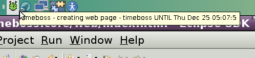
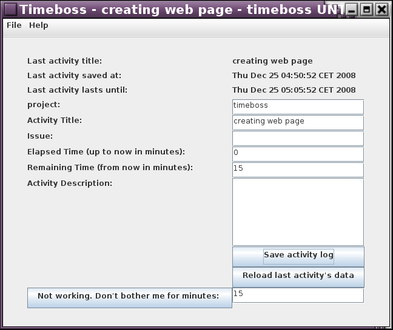
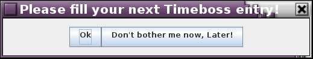
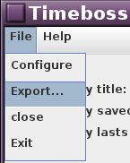

Timeboss is standalone desktop application that always asks you what and how long will you be doing. When the time is spent it asks again. All activity is logged to xml files so you will have genuine timesheet of your time facing your computer. There is an exporter that exports your activity to CSV table.
Timeboss is written in Java and should work on all platforms that are supported by Java 6.
Timeboss is free software hosted on Sourceforge.
Timeboss handles the Ext-4 data loss problem fine by design :-)
You can download and use Timeboss in less than five minutes!
Timeboss always wants to know what you are doing.
So it is sitting on your system tray and keeps an eye on you:
Timeboss chages its color to show three states:
Timeboss always wants to know what you are doing.
You can tell it using this form:
Timeboss always wants to know what you are doing.
When your last activity is over it asks you for your current activity:
Add timeboss to your user's autorun program list! You can start the application using the following command:
Use this menu to save the collected data in a single CSV file:
The collected data is separated by ; and text delimiter is ". It can be opened using your favourite spreadsheet application. The entries can be filtered using the spreadsheet application. It is easy to summarise the collected data: